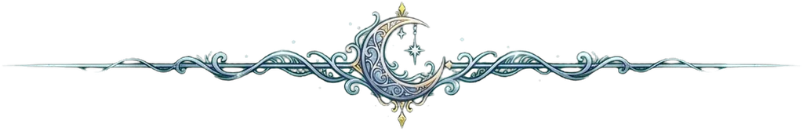

The story
A city built on a fallen moon
Lumenvale floats above a sea of clouds, carved from the pieces of a moon that sank long ago. At its heart, the Spiral Library keeps every memory of light inside silver lanterns.

One night, every lantern went out. As the Archivist, you will gather five wardens and a very small owl to find what was taken.
5WARDENS
4DISTRICTS
1MOON TO SAVE
Selene keeps the last lit lantern.